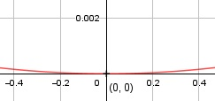

Aufgabe 12 f(x) = 0,001x2 f'(x) = 0,002x, f''(x) = 0,002, f'''(x) = 0 Definitionsbereich: -∞ < x < ∞ Wertebereich: f(x) ≥ 0 Asymptoten: - Symmetrie: f(-x) = 0,001 * (-x)2 = 0,001 * x2 = f(x) --> achsensymmetrisch zur y-Achse Nullstellen: 0,001x2 = 0 |:0,001 x2 = 0 |ⱱ x1,2 = 0 --> N1,2(Berührpunkt) (0|0) Schnittpunkt mit der y-Achse: f(0) = 0,001 * 02 = 0 Sy(0|0) Extrempunkte: 0,002x = 0 | :0,002 x = 0, f(0) = 0 f''(x) = 0,002 > 0 --> Tiefpunkt (0|0) entspricht dem Scheitelpunkt der Parabel. Wendepunkte: 2 = 0 --> Widerspruch, keine Wendepunkte Graph:
